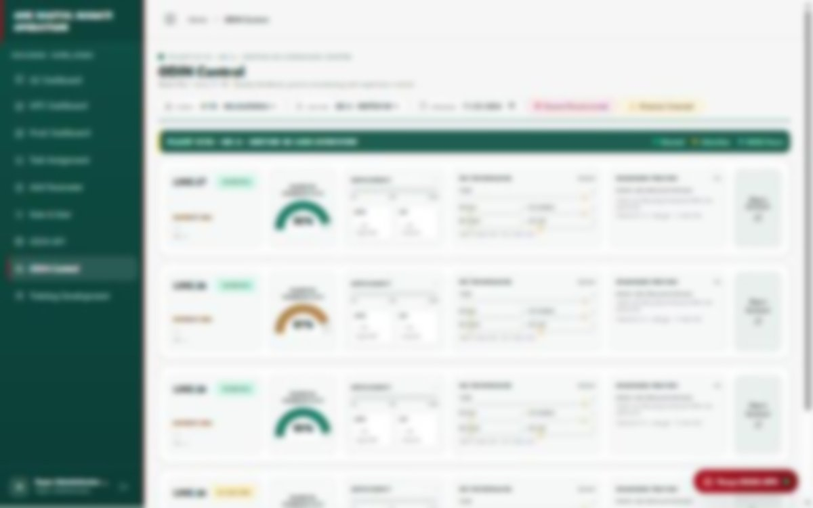
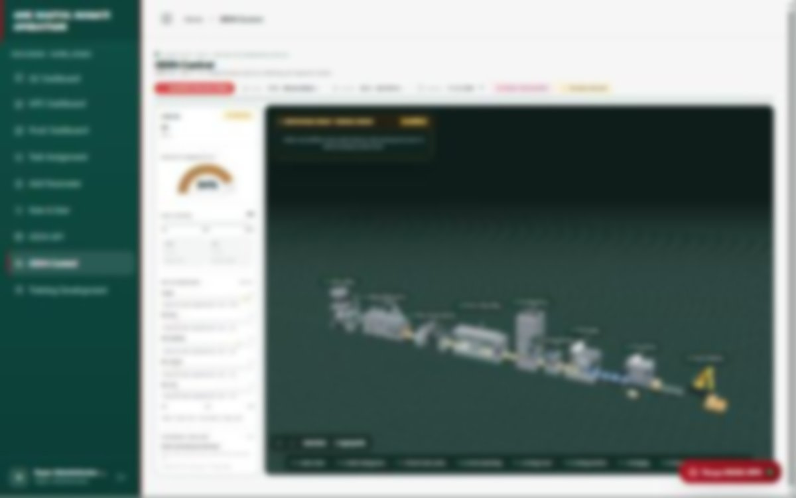

ODIN Control: a cockpit for the production line
ODIN Control gives production teams one view of every line: its status, its performance against standard, and a 3D view of the line itself. Issues found by an AI agent, including those raised by the margin analysis, arrive as clear tasks.

Blurred: confidential dataLine overview
One screen answers the first question of every shift: which line needs attention now.
Status and productivity
Each line shows whether it is running and how productive it is.
Material performance
Material efficiency and waste are compared with their standards for any chosen day.
Quality checks
Product weight checks show at a glance whether output is on target.
Line detail in 3D
Opening a line shows an interactive 3D model of it, from the first process step to packaging.

Blurred: confidential dataAlerts in context
An issue lights up on the machine it concerns, and the task list filters to that machine.
Clear tasks
Each task says what to adjust and the target to reach, in a few words.
Safe changes
Changes need a confirmation and are limited to authorised roles.
Operations AI agent
An AI agent watches production data and the issues sent from the margin analysis, and turns them into suggestions for the line.
Reasoning from knowledge
The agent uses the plant's process knowledge in ODIN Brain to decide which settings matter, and keeps its suggestions within safe ranges.
Real-time notifications
New findings appear on screen as they happen, on any page of the platform.
My part
Team
ODIN Control was built by the ODIN team. My work connected it to the margin analysis and to the plant's data.
What I built
The link from ODIN GP1 to the shop floor, so approved actions arrive as tasks on the right line; the material performance and quality views; and consistent task wording across the modules.